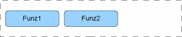

UI Panels - scheda del pannello [ CommandPanel]
CommandPanel]
In questa scheda è descritto il pannello CommandPanel, in termini di:
- riferimento alla documentazione di dettaglio dell'elemento del metamodello utilizzabile durante la modellazione
- uno o più snapshot che rappresentano graficamente il pannello
- una descrizione del pannello che ne descrive l'utilizzo e le possibili varianti
- elenco degli eventi gestibili (implicitamente o esplicitamente) relativamente al pannello
Identificativo e riferimenti di dettaglio
La documentazione metamodeldoc di dettaglio del pannello CommandPanel è disponibile
qui.
Descrizione
Il CommandPanel è un pannello utilizzato per realizzare pulsantiere,
ovvero gruppi di Button destinati ad eseguire funzioni di business.
All'interno del singolo tab è possibile inserire tutte le tipologie di pulsanti disponibili.
Immagini esemplificative

fig.1 - esempio